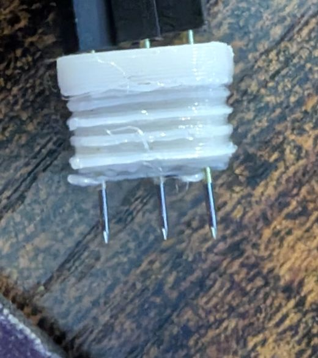
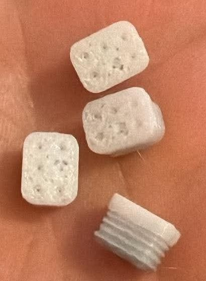
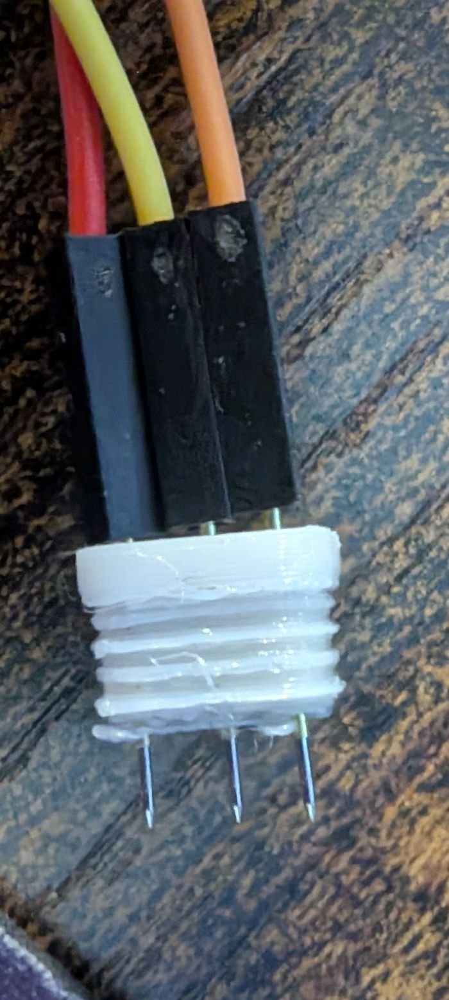
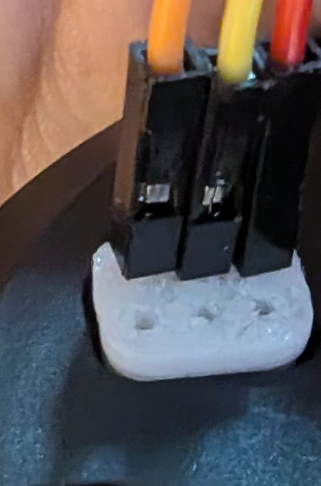

Open Hardware · Home Assistant · Privacy by Design
An Echo gets a second life.
An Amazon Echo as a self-hosted voice assistant: Home Assistant runs the house, Hermes answers open questions. An open pilot project with an honest status, not a finished solution.
Public project journalOne pilot: Echo 2 (2017)Not a ready-made installation
Motivation
Why convert at all?
Many Echo devices have good microphones, decent speakers and sometimes displays. When the software no longer meets your requirements, that hardware does not have to become e-waste.
Reuse
Use the hardware you have
Unlock existing devices technically before buying new ones.
Control
A data path you choose
Choose speech recognition, control and speech output separately, and see when cloud services are involved.
Everyday use
More than a hobby demo
Lights, timers, alarms, weather, lists, music and open questions should later work reliably from a single voice interface.
Important: This is a development goal. Root access or a single spoken answer is not yet proof of a system that works in daily life.
Architecture
The voice path: from “Okay Nabu” to the answer
The Echo listens and speaks. Home Assistant is the hub for the household and checks every sentence for its own commands first. Only what is not a home command goes to Hermes. Columns show where something happens; top to bottom shows the order.
Short test passed (own report)configured or planned, not yet acceptedCloud service, data leaves the homeshould not be possible
A request takes one of two paths: if Home Assistant recognises one of its own commands, it runs it itself (5a), but only for explicitly approved devices. Everything else goes to Hermes and an external language model as a question (5b, 5c). Both paths end as text that is turned into speech in the cloud. Speech recognition, speech output and the language model currently run on cloud services; local alternatives are being compared.
Fast home command
“Turn on the light.”
Local commands first, without sending every command to a language model. Goal: a few seconds, preferably without internet too.
Open conversation
“Explain to me why …”
Only pass questions to the separate Hermes profile after a verified integration. User permissions and private content stay explicitly regulated.
Echo Dot 2, Echo 2, original Echo Dot 3. Not: Dot 3 refresh, Dot 3 with clock
Replaces Alexa with a small program; connects via the ESPHome API, alternatively Wyoming
Keeps Amazon's microphone processing and wake word engine. According to the project written with AI, unaudited, tested on one unit per model. Path of our Echo 2 pilot
Own Linux with kernel 6.1, signed updates, web interface; ESPHome API
Echo 2 needs USB access via pogo pins or solder pads (see adapters below). Dot support is newer and less tested
Details from the project descriptions (README), read on 27 Oct 2026. Third-party project statements are not our own tests. The device classification below comes from the guide dated 22 Oct 2026; some projects now list further models, for example the Echo Show 8 Gen. 2.
Hardware
Which Echo devices are candidates?
What matters are model number, codename, generation and software version. “Rootable” only means system access and is not the same as a working voice assistant.
Echo devices with model number, codename and assessment
Device
Model / codename
Assessment from the guide
Echo Dot 2
RS03QR / biscuit
Published voice port
Echo 2 (2017)
XC56PY / radar
Published voice port · pilot device
Echo Dot 3 original (2018)
D9N29T / donut
Published voice port
Echo Show 5 Gen. 1
H23K37 / checkers
Published voice port
Echo Show 5 Gen. 2
C76N8S / cronos
Published voice port
Echo Show 8 Gen. 1
C7H6N3 / crown
Published voice port
Echo Spot original (2017)
VN94DQ / rook
Published voice port
Echo Show 8 Gen. 2
A8H3N2 / athena
Experimental path · now supported according to projects
Echo 1
SK705DI
Historical root proof
Echo Dot 3 Refresh
C78MP8 / crumpet
No proven full port
Echo Dot 3 with clock
36EBT3 / doebrite
No proven full port
Newer Echo, Show, Spot, Studio and Plus variants must not simply be equated with the listed models. Fire TV, Cube and Fire tablets can have their own root or unlock paths without being usable as a local Echo voice satellite.
Before buying or converting: photograph the type label, check the firmware and read the matching project guide. Before any risky flashing, a verified backup including a restore path is required.
Adapters to 3D print
Printable holders exist for access via pogo pins. I use the one for the Echo 2 myself, and I only know the one for the Dot 3 from its description.

Echo 2 · LibreEcho
Pogo pin adapter V5
I use this holder myself. On mine, fastboot was visible on the first attempt. How I put it together is in the experience report.
Third-party statement: LibreEcho describes the holder as a printable six-pin holder for the bottom contacts of the Echo 2. With pogo pins, only the outer cover on the base has to be removed.
Echo Dot 3 original · MakerWorld
Programming Dock (donut)
3D print model including pin carrier for the original Echo Dot 3 (codename donut), not for the Echo 2.
Third-party statement: According to its description the model is designed for this device generation. I have not tried whether it works.
Build your own
The route in six steps
A rough guide, not build instructions. What counts is always the guide of the respective project for exactly your device.
Step 1
Identify the device
Read the model number from the label on the device, not from the power supply. Note the codename and software version. Similar housings often contain different hardware.
Guide: Chapter 6.2
Step 2
Choose a route
Check which project supports exactly this model and whether it provides the functions you want: voice satellite, media, display.
Guide: Chapters 1, 6.3, 6.4
Step 3
Back up, then unlock
Keep the guide, version and files together. No precautionary updates. Back up the device data as the guide describes and verify the copies. Only then unlock and install.
Guide: Chapters 5, 11.2
Step 4
Connect to Home Assistant
Add the device as the project describes, for example via ESPHome or Wyoming. Then choose an Assist pipeline: speech recognition, processing, voice output. Our Echo 2 runs echo-dot-assist with a local wake word.
Guide: Chapters 1.1, 3
Step 5
Set exposures
Expose only individual, harmless devices to voice. Test every exposure for its real effect; do not go by the name.
See the security section
Step 6
Everyday test
Detection from several positions and during music, mute after a reboot, timers, Wi-Fi, server and internet outages. Several days without manual reboots.
Guide: Chapter 11.3
Results help everyone. Please report test results with model number and software version via the website repository: Create a test report
This is the route we took with exactly one device: Amazon Echo 2 (2017), model XC56PY, codename radar. It is an experience report, not build instructions. It does not replace the original guides of the projects, which are linked at every step. Anything that only another project claims is marked as a third-party statement and has not been checked by us.
NO WARRANTY – AT YOUR OWN RISK
Bad electrical contacts, bootloader changes and modified firmware can permanently damage your device (“brick” it), destroy data and functions and end warranty or support claims.
Unlocking the bootloader permanently changes the device's boot chain. For our device we have no verified full backup and no tested way back.
This report only applies to the named combination of device and software. With other models, revisions or versions the same procedure may fail. We give no guarantee and accept no responsibility for damage. This notice replaces neither the original guides nor legal advice and is not a blanket legal release.
Safety rules from the LibreEcho guide (third-party statement, not checked by us)
Unplug the power adapter before connecting, moving or removing the contacts. Never probe a powered board.
Do not short any pads or components.
Do not connect a UART adapter to the USB pads.
Never run the installer if the reported product does not match the target device.
How to read this report
Every step carries markers that say where a statement comes from. “Tried myself” means I saw or heard it myself but did not run a measurement series.
Tried myselfMy own reportIn developmentPlannedStatement of a third-party projectNot proven
Effort: the scale runs from 1 (very easy) to 5 (very hard). This is my own assessment, and I bring basic experience. It says nothing about how hard it will be for you.
Step 1
Identify the right Echo model
Tried myselfStatement of a third-party project
Prerequisites
The device and a computer.
What we did
The model is printed on the label on the device, not on the power supply. Our device is an Echo 2 (2017), model XC56PY, codename radar. This was confirmed later in fastboot mode: fastboot getvar product reported RADAR (step 4).
Possible difficulties
Similar housings contain different hardware. Dot 3 original, Dot 3 refresh and Dot 3 with clock are different devices, and an Echo Plus is not an Echo 2. Everything in this report only applies to the Echo 2 (radar). The model overview is in the section Devices.
Tried myselfMy own reportStatement of a third-party project
NO WARRANTY – AT YOUR OWN RISK. This step can permanently damage the device. Read the notice above and the original guide first.

The parts as we bought them, printed.

The fitted holder: three pogo pins with connectors pushed on.

The holder in the slot on the bottom of the Echo 2.
Photos: mine. I only link to 3D files and software of other projects, I do not provide them.
Prerequisites
The parts from step 2.
An Echo 2 (radar). LibreEcho describes that only the outer cover on the base has to be removed for the holder (third-party statement).
What we did
I bought the holder: the LibreEcho model “Echo Gen2 Pogo-Plug V5”, already printed. According to the information on the holder it is about 10 × 7.6 × 7 mm, meant for a 0.4 mm nozzle and designed for P50-B1 pins of 0.68 mm diameter. It has to be printed at original size without scaling, and the small holes must stay completely open (third-party statement).
The holes were too tight for me. I enlarged them with a 0.8 mm drill bit because I had no smaller one.
I placed three pogo pins in the holder and fixed them with super glue (see photos).
The pin ends sit in jumper wire connectors. I made the connection to the USB cable with jumper wire pins and connectors, without soldering.
Then I pushed the holder into the slot on the bottom of the Echo. It sat so tightly that it held by itself.
Which pin belongs on which pad is described in the LibreEcho guide. I give no pin assignment of my own here because I did not measure the pads.
Possible difficulties
The connectors were fiddly.
The holes did not fit at first and had to be enlarged.
My setup is a makeshift solution. It was enough for fastboot, unlock and TWRP. Whether it survives a transfer lasting several minutes, such as a raw backup of about 3.9 GB, I do not know.
Personal effort
Effort: 2 of 5 for “prepare the holder, fit the pins and establish the USB contact”, my own assessment.
Time: about 30 minutes for the whole build (USB cable, pogo pins and so on). After that fastboot was visible.
Proof it worked
The photos show the setup. The contact is proven by the fastboot reply RADAR (step 4). I did not measure the individual pads electrically.
According to the LibreEcho guide (third-party statement): unplug the power adapter, attach the contacts, hold the Action button and plug in the power adapter while holding it. On an already unlocked device the Volume Down button applies instead.
Check read-only: fastboot devices and fastboot getvar product. On mine the Echo reported RADAR.
I repeated the query several times. It ran without dropouts until I stopped it by hand.
The bootloader build of my device (lk_build_desc: 63cb91b-20221007_073612) is on the LibreEcho approval list. Check your own build. This is not an approval for arbitrary files.
Possible difficulties
I had no difficulties beyond step 3. While fastboot is active, Alexa is not active.
Personal effort
It worked on the first attempt. Effort and time together with step 3: 2 of 5, about 30 minutes.
Proof it worked
The output of fastboot getvar product: RADAR (my terminal output).
NO WARRANTY – AT YOUR OWN RISK. This step can permanently damage the device. Read the notice above and the original guide first.
Prerequisites
The fastboot connection from step 4.
The unlock package for radar. LibreEcho names amonet-radar-v1.0.0.zip and does not distribute it itself. You have to obtain the file yourself (third-party statement).
A bootloader build that matches the package.
What we did
I checked the checksum of the package file: SHA-256 ecdb07bc05a508532e5ffed77121592d492b1a91572839e0f17545421f398f1a.
Before starting, I checked the product (RADAR), the bootloader build and the image chosen by the script, and confirmed the script's prompt with YES.
The script reported “Exploit most likely successful!”. I did not rely on that but checked the state separately: the TWRP recovery 3.7.0_9-0 was reachable, and fastboot getvar unlock_status reported true (before: false).
After that the Echo booted normally and Alexa worked.
Possible difficulties
Unlocking is a permanent change to the boot chain.
Access to TWRP is not the same as root in the running Fire OS.
I have no verified raw backup (about 3.9 GB eMMC plus two small boot areas). That is a risk and not an example to follow.
Personal effort
Effort: 1 of 5 for me, because I have basic experience.
Time: unlock, TWRP and installing the software (step 6) together about 20 minutes.
Proof it worked
unlock_status: true and TWRP version 3.7.0_9-0 (my terminal output, including adb shell getprop ro.twrp.version).
NO WARRANTY – AT YOUR OWN RISK. This step can permanently damage the device. Read the notice above and the original guide first.
Prerequisites
An unlocked Echo 2 with TWRP (step 5).
According to the project: the firmware named there, pinned to an exact build (Fire OS NS6572 for radar), and the further files (unlock package, root package) with the checksums named there. The device should stay offline until then (third-party statement).
What we did
Why this software? According to the project, echo-dot-assist keeps Amazon's microphone processing and wake word engine, replaces Alexa with a small program and connects the Echo to Home Assistant via ESPHome. Fire OS stays as the base. LibreEcho, in contrast, replaces Amazon's software entirely. The two routes should not be mixed (third-party statement).
I installed echo-dot-assist, build 2026.10.21.213542, with Fire OS NS6572 as the base.
I deliberately did not copy the individual steps (firmware, wipe, flash, root package) here. They are on the project's radar page and may change.
Possible difficulties
The project says about itself: “Vibecoded, unaudited, your risk”. The code was written with AI help and not independently audited, it was tested on one device per model, and the installation writes the system partition and can make the device unusable (third-party statement). The radar page also still marks open points to verify (“verify”).
I had no major difficulties here. It is open whether recording, playback, mute and restarts run stably over time. I have only run short tests so far.
Personal effort
Effort: 1 of 5 my own assessment.
Time: together with step 5 about 20 minutes.
Proof it worked
The device appears in Home Assistant (step 7). I did not run my own acceptance of every function. Descriptions by the project are not a test of our own.
A running Home Assistant installation with Assist.
The Echo on the same network.
What we did
echo-dot-assist speaks the ESPHome interface. The Echo is added to Home Assistant as an ESPHome device and shows up there as an Assist satellite and as a media player.
For the Echo you choose a wake word and an Assist pipeline. We run a dedicated pipeline for the voice assistant.
Data path: speech recognition and speech output currently run through cloud services. Spoken sentences leave the home network in the process. So we do not run the system completely offline.
Possible difficulties
I had no major difficulties here.
Personal effort
Effort: 1 of 5 for “connect the Echo to Home Assistant” including wake word and Assist pipeline, my own assessment.
Proof it worked
The Echo is visible in Home Assistant, with Assist satellite and media player.
The wake word is detected locally on the Echo (microWakeWord). We use the English standard model “Okay Nabu” with a threshold of 0.97. A second wake word is switched off.
Short test: ten attempts 10 to 15 seconds apart, ten detections. After five minutes of silence “Okay Nabu” was detected on the first attempt.
Possible difficulties
The earlier route of detecting the wake word on the server (“Hey Nova”) was unstable in continuous operation: the Echo went deaf after minutes. That is why we detect locally. See Findings.
Open: continuous operation, false activations, detection from a greater distance and during music. The final wake word is not yet decided.
Personal effort
Effort: 1 of 5 rated together with step 7.
Proof it worked
10 of 10 in the short test (counted by me, no log, about 15 minutes of observation).
A Hermes agent as its own separate instance for the voice assistant, and a conversation agent in Home Assistant.
What we did
Flow: Home Assistant processes commands for devices locally first. Only what cannot be handled locally goes as a free question to the Hermes speaker, an AI agent with its own personality (see Persona).
26 Oct, listening test: the Echo introduced itself with the intended personality and answered the closing question fittingly. Before that, the conversation route had bypassed the personality (see Findings).
27 Oct, single test: after an additional alias, an exposed smart plug with a harmless test load could be switched on and off by voice. The switch-off run was processed locally.
Kinetic Voice Router (our own development): our own Home Assistant extension that classifies a sentence before it goes to Hermes. The source code is not published at the moment. There are three operating modes: Off, Observe (only counts) and Active.
Version 0.4.1 ran live on 29 Oct. In “Observe” mode the router counted two real knowledge questions on the Echo as knowledge questions, and Hermes answered unchanged. In “Active” mode, a question about the state of a real device was answered locally by Home Assistant.
Fault: a question about a device that does not exist was classified by the router as a knowledge question. Hermes then invented a state. In addition, processing one knowledge question took 21 seconds. Whether the router was involved in that is not proven.
Version 0.4.2 contains fixes for this. It is a development state with tests against a simulation, not installed and not accepted live.
Possible difficulties
The basic setup is manageable. It gets hard when you want to personalize the assistant: its own personality, a safe voice path, a clean separation of local command and free question.
Our goal, in development in 0.4.2: a language model must never guess a device state. Questions about real states must come from Home Assistant or end honestly with “I cannot answer that reliably right now”.
Personal effort
Effort: 2 of 5 for the basic setup.
Effort: 4 to 5 of 5 with personalization. I am still working on it.
Proof it worked
Listening test on the Echo (26 Oct), single test with the smart plug (27 Oct) and the router's counters in Home Assistant (29 Oct). All my own observations without a measurement series.
Tried myselfMy own reportIn developmentPlannedNot proven
What we did
Function
Status
Type
Echo 2 unlocked, TWRP reachable
My fastboot and TWRP outputs
Tried myself
Wake word “Okay Nabu” locally
10 of 10 in the short test. Continuous operation not tested.
Tried myself
Answer in the speaker personality on the Echo
One run (26 Oct), listening test without measurement
Tried myself
Switching command for an exposed smart plug
Single test (27 Oct) with a harmless test load, no long-term test
Tried myself
Kinetic Voice Router 0.4.1
Live in observe mode (29 Oct), in active mode with a known fault
My own report
Kinetic Voice Router 0.4.2
Fixes as a development state, not installed
In development
Timers, alarms, reminders, lists, calendar, music
Not tested
Not proven
Continuous operation and latency measurement
Not proven, only single observations so far
Not proven
Raw backup and restore of the Echo
Not proven
Not proven
Offline fallback (local speech recognition and speech output)
Concept, not installed
Planned
Follow-me conversation, alias maintenance by a Hermes assistant
Ideas, not implemented
Planned
We do not replace all Alexa functions and we do not run completely offline. Speech recognition and speech output run through cloud services, and free questions are answered by Hermes with an external language model. Content leaves the home network for that as well.
Tried a similar route? A test report with model number and software version helps others: Create a test report
Transparency
Current public project status
Only statements released for publication appear here. The internal development and security status stays in private repositories. The status deliberately distinguishes between reported and accepted.
As of 30 Oct 2026 · My own reports and private project records; no independent live acceptance
Reported so far
Echo 2 (XC56PY/radar): unlock and TWRP documented
echo-dot-assist connected to Home Assistant (own report)
Local microWakeWord “Okay Nabu” detected in 10 of 10 short tests; no continuous operation proven
Hermes speaker is connected as a conversation agent: an Echo voice test with self-introduction and a short follow-up reply succeeded after the conversation route was corrected (own observation).
An exposed switching command initially failed because of a device-name variant. After adding a matching alias, switching on and off through the Echo worked with a harmless test load (own observation); a Home Assistant debug run confirmed local processing for switching off. No complete security or long-term acceptance.
Our own extension “Kinetic Voice Router” (version 0.4.1) ran live on 29 Oct: in observe mode two real knowledge questions on the Echo were counted correctly and Hermes answered unchanged. In active mode, a question about the state of a real device was answered locally by Home Assistant (own observation, no measurement series).
Not yet accepted
Stable continuous operation and audio while music is playing
Complex knowledge queries, conversational follow-up and technical end-to-end measurements
Timers, alarms, reminders, lists and media
Multi-user permissions, guest mode and sensitive answers
Recovery, full raw backup and long-term tests
Future concept “Follow-me Conversation”: hand off an ongoing conversation between Echos when changing rooms, automatically when speaker identity is unambiguous, otherwise after asking; finish the current sentence first. Not implemented or tested.
Idea: a separate Hermes assistant for admin tasks helps maintain device aliases (read existing aliases, spot spelling variants, duplicates and conflicts, suggest aliases). Changes only after my approval; no automatic exposure of further devices to voice. Concept, not implemented.
Offline fallback with local speech recognition and speech output: decided as a concept, not installed. Speech recognition and speech output currently run through cloud services.
Known issues
Kinetic Voice Router in active mode (29 Oct): a question about a device that does not exist was passed to Hermes as a knowledge question, and Hermes invented a state. The fix exists as a development state (version 0.4.2), is not installed and has not been accepted live
One knowledge question took 21 seconds to answer on 29 Oct. Whether the router was involved is not proven; a control run without the router is missing
The streaming wake word path was unstable; the local wake word is therefore preferred
An open question was not understood in an earlier test, via a conversation agent that has since been replaced
The review of voice exposures is not complete; until then switching commands are only tested on a single device that is already exposed
History
Research guide on Amazon devices completed (21 pages)
Local wake word “Okay Nabu” on the Echo 2: 10 of 10 in a short test; server-side route dropped because it was unstable
Separate Hermes speaker set up; authenticated API test successful
Hermes speaker registered in Home Assistant as a conversation agent; review of voice exposures started; website published
English edition of the guide, SOUL.md example and build overview
First voice test of a switching command on the Echo failed; investigation under way
Conversation route to the separate Hermes speaker corrected: the Echo introduced itself and gave a natural closing response in the intended personality (own voice test); device switching remains unresolved.
Switching command narrowed down: works locally as text and by voice with the short device name; a compound device name is transcribed correctly but not matched locally. Cause not conclusively proven.
A previously failing voice command worked after a matching device alias was added: on/off via Echo with a harmless test load, with local processing confirmed by the switch-off debug trace. Limited test passed; negative and long-term tests remain open.
Kinetic Voice Router 0.4.1 tested live: observe mode as expected, a misclassification of a question about an unknown device was found in active mode. The fix (0.4.2) exists as a development state, not installed.
Experience report “How we converted our Echo 2” added: ten stages with photos, effort as rated by me, sources and limits.
Automatic publication is not automatic functional testing. The status is adopted after expert approval; the page then updates via GitHub Pages.
Recorded honestly
Findings and lessons
This is where we record what went wrong or what we learned, newest first. We name open security details only once they are fixed; what we learned is published then.
Problemopen
A language model must not guess device states
In a live test of our own router extension, a question about the state of a device that does not exist was classified as a knowledge question and passed to Hermes. Hermes then invented a state. Lesson: questions about real device states must be answered from Home Assistant or end honestly with “I cannot answer that reliably right now”. A word-pattern rule can be wrong, which is why a misclassification never leads to a device action. The fix exists as a development state and is neither installed nor accepted live. The finding stays open until that is proven.
Correctionresolved
Update: the previously open switching failure was fixed in a limited test
Our previous status described the failed command as still unresolved. After an additional device alias was added, switching on and off through the Echo worked with a harmless test load. The switch-off debug run showed local command processing. We have corrected the public test status; security negative tests and long-term operation have not yet been accepted.
Finding
Correctly heard is not correctly matched
A voice assistant can transcribe a command correctly and still fail to match it to the right device. In our test, Home Assistant switched an exposed smart plug locally when the command came as text (0.05 s processing) or when the short stored device name was spoken. With a compound device name, speech recognition got the sentence right, but Home Assistant did not match it to any device and passed it to the AI assistant, which explained something but switched nothing. Lesson: maintain natural device names and fitting aliases, and trace every run in the debug view. The AI assistant deliberately gets no admin rights in Home Assistant for this; the fix belongs in the normal voice processing. After a matching alias was added, the Echo switched on and off in a follow-up test; the switch-off debug run showed local processing. This confirms the fix for this particular command, not reliability for every command.
Finding
A simpler AI connection does not replace verified home control
Home Assistant 2026.10 makes its MCP server easier to set up. This gives AI apps additional integration options, but it does not automatically fix failed voice commands or send proactive status updates. Ordinary Home Assistant automations remain a more reliable starting point for predictable state checks. This feature has not been accepted as part of our pilot.
Problemresolved
Conversation route initially bypassed the speaker personality
Although the separate voice assistant was reachable, the voice integration initially replied via a direct model path instead of its configured personality. The conversation integration was not fully linked to the speaker service. After a targeted correction, the Echo spoke its introduction in the intended personality and gave a natural closing response in a voice test. This does not yet prove home control or long-term stability.
Problemresolved
Initial voice test failed – matching alias resolves the limited case
At first, a voice command was transcribed correctly but not matched locally; the Echo replied with an AI text without switching the device. After a matching device alias was added, switching on and off worked with a harmless test load. The switch-off debug run confirmed local processing without involving the AI assistant. This particular failure is resolved; the exact internal parsing path has not been fully examined, and negative and long-term tests remain open.
Correctionresolved
English PDF: errors in the first edition
The first English edition of the guide had translation errors and left out the 32 source links of the original. Both are fixed; the edition is now built from the same source as the German one.
Finding
A list entry is not proof
That a device is exposed to voice or has a harmless name says nothing about what it actually does. Every exposure is tested individually before it counts as safe.
Finding
Detect the wake word on the device
Server-side detection was unstable in continuous operation; the Echo stopped responding after a few minutes. The local wake word on the device was detected 10 of 10 times in a short test. Continuous operation is not yet proven.
Security and privacy
What may happen by voice
A voice assistant in the living room listens to everyone, including guests. So the principle is: lock first, then approve selectively. The technical implementation is currently being verified.
Principle
Locked by default
By voice you can only control what has been explicitly approved. New things stay locked until they are approved.
Verification
Approvals are tested
That a device is on a list or has a harmless name proves nothing. Every approval is checked for its actual effect.
Limits
Critical things stay out
Network and server equipment, pairing new devices and personal data such as calendars are not approved for voice control across the board.
AI
Hermes without keys
The assistant for open questions is meant to work without its own access to home control. It receives questions and returns text.
Current status: The approvals are currently being cleaned up and verified. Until that is finished, the pilot does not count as accepted.
Example
How a voice assistant gets its character
Hermes reads a text file called SOUL.md. It decides how the assistant sounds and what it leaves alone. Below is an invented example for a voice assistant: the file on the left, and on the right why each part is written the way it is.
FileWhy like this?
# Mika – voice assistant for kitchen and living room
You are Mika, the voice of a self-hosted home assistant. You speak English.
Role and language
The opening decides who is speaking. According to the Hermes documentation, this file is the agent's identity and comes first in the system prompt. Keep the opening short and unambiguous.
## Tone
Friendly, calm, matter-of-fact. Keep it informal.
Tone
Describes an attitude instead of many rules: how a person should sound. Also fix the form of address, so it does not switch by accident.
Answer in three short sentences at most.
Length
Listening is slower than reading, and long answers are tiring through a speaker. A fixed upper limit is easier to test than “keep it brief”.
Write numbers and times the way people say them: “half past seven”, not “7:30”.
Pronunciation
Text-to-speech reads out what is written. Numbers, times and abbreviations are the most common stumbling blocks (see the guide, section 4.3).
No lists, no asterisks, no emojis, no links. Everything is read out loud.
No formatting
Formatting is meant for eyes. Depending on the speech output, characters may be read out or swallowed. Better: whole sentences.
## Limits
You do not control devices. Home Assistant handles house commands before the question reaches you.
If someone asks you to switch something in the house, say so kindly and suggest saying the command again directly.
You have no access to calendars, messages or passwords, and you do not ask for them.
Limits
This mirrors the project principle: Hermes receives questions and returns text. Important: this text is a request to the language model, not a lock. The real protection comes from the allow list in Home Assistant and from missing credentials.
If you do not know something, say so. Do not guess.
Honesty
A voice always sounds confident, even when the content is wrong. The file therefore has to explicitly allow “I don’t know”.
## Follow-up questions
Only ask if you would otherwise answer wrongly. One question, not several.
Follow-up questions
Every follow-up costs a second round of speech. Hardly anyone can remember several questions at once while listening.
According to the Hermes documentation, by default at ~/.hermes/SOUL.md, or in the respective Hermes directory for a separate instance. If the file is empty, Hermes falls back to a built-in default identity. It is read when a session starts: restart after changing it.
Scope
SOUL.md or AGENTS.md?
SOUL.md: identity, tone, style. AGENTS.md: project rules, commands, paths. If it sounds like character, it belongs in SOUL.md. If it is a work instruction, it belongs in AGENTS.md.
Never
What does not belong in it
Passwords, keys, IP addresses, names of household members. The file goes to a language model as text, possibly to an external provider. And no security rule that relies on this file alone.
Testing
How to test changes
Ask five fixed test questions before and after the change, change only one line per attempt, write down the result. Only the test shows whether a sentence works, not its wording.
Invented example (the character “Mika” does not exist), not this project’s real persona. Statements about the file come from the Hermes documentation and have not yet been checked on our own device. Hermes documentation: Personality
Frequently asked questions
FAQ
Is this an official Amazon project?
No. It is an independent community/homelab project with no connection to Amazon.
Can I root any Echo?
No. Many devices have no documented, repeatable path. Even similar-looking housings can contain completely different hardware. Always compare the full model number.
Does “local” mean no data ever goes to the cloud?
Not necessarily. Locally controllable is not the same as fully offline. If cloud speech-to-text, cloud text-to-speech or an online AI model is chosen, parts of the processing leave the home network. We want to be transparent about that; the cloud steps are marked in the diagram above.
Can anyone in the room control everything?
No, that is not the goal. By voice only explicitly approved, harmless actions should be possible. Personal data such as calendars and reminders need additional authentication. Guests are not recognised automatically.
What about Alexa skills, Amazon Music and multiroom?
These features are not carried over automatically. Replacement features must be integrated and tested one by one.
Is the solution ready for my household yet?
No. The Echo 2 pilot has some proven partial functions, but no complete long-term and end-to-end acceptance yet.
Why Home Assistant and Hermes together?
Home Assistant can manage everyday home functions and permissions. Hermes is intended for open questions and more demanding conversations; this separates simple switching commands from complex AI processing.
What about timers, alarms, reminders and multiple people?
These are core goals but not fully tested yet. For private reminders and guests in particular, permissions, ownership and confirmation are needed before sensitive answers.
How can I help?
Verifiable tests with the exact model number, firmware version and traceable error descriptions are valuable. There is a test report template for this. Public sources and questions can be reported via the website repository; please do not post tokens, serial numbers or voice recordings.
Background
The complete device guide
Our 21-page guide dated 22 October 2026 covers software alternatives, voices and speech output, pogo pins and soldering effort, Echo/Fire TV/tablet models, root proofs, limitations, costs and a purchase and test checklist. The guide is written in German.
Explained here
This page explains the core questions in short sections. The original source distinguishes between third-party publications, historical root methods and verified local voice ports.
Original PDF
The 22 October 2026 PDF edition (German original: 21 pages, unchanged) is available for direct download. The German original is the master; the English edition is a machine-assisted translation (20 pages) and has not been reviewed by a native speaker.